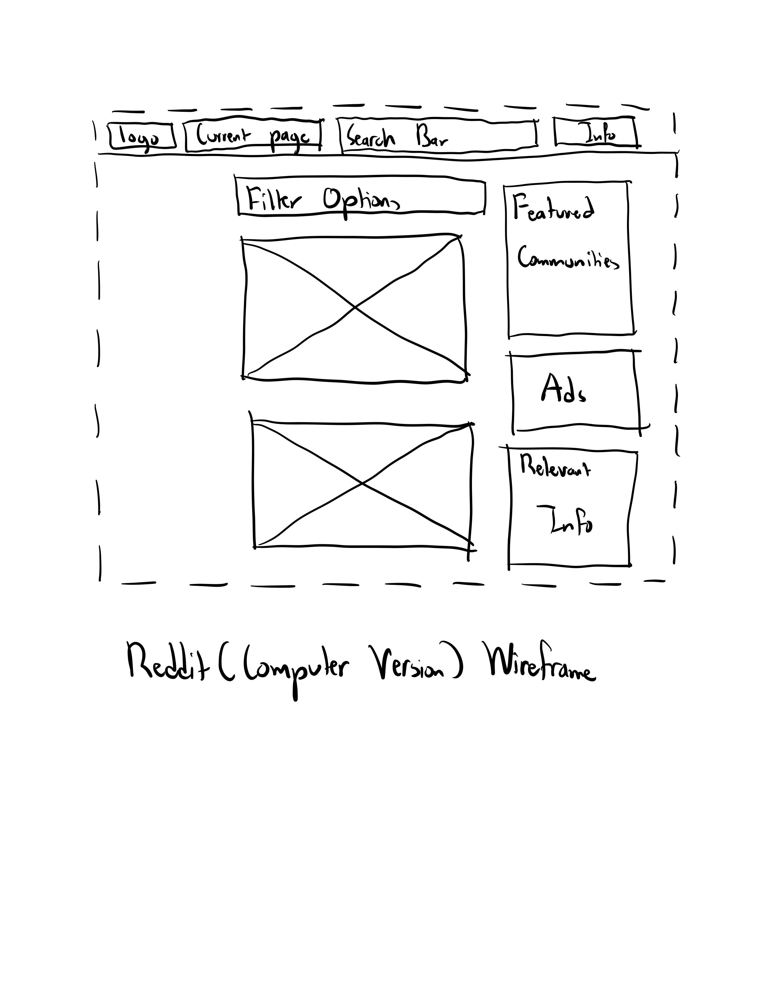
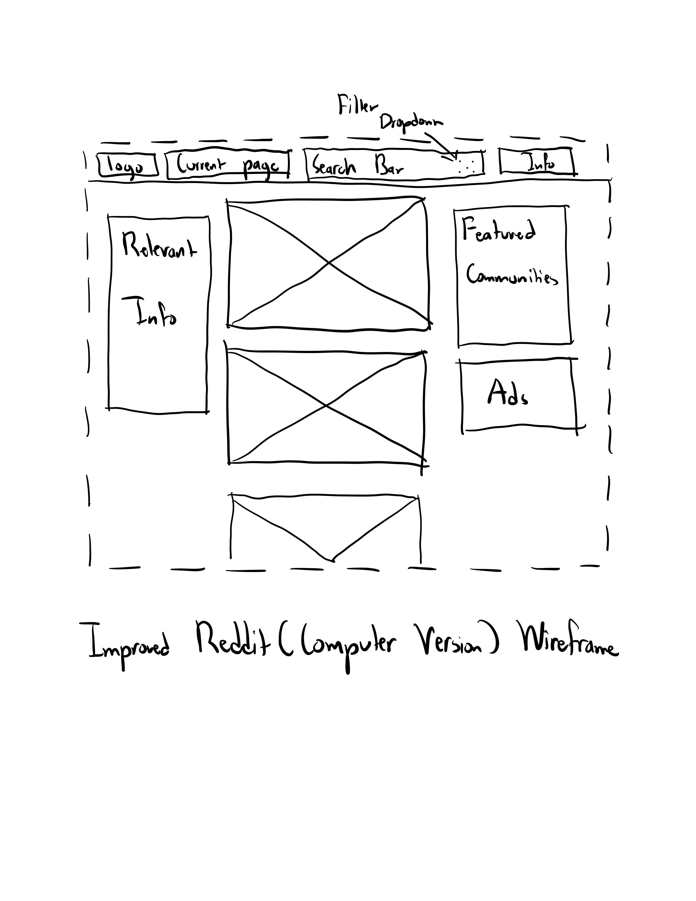

-
Using the favorite website you chose in homework 1, create a wireframe for one page of it using pen/paper, PowerPoint, or any your tool of choice. (use the 'img' tag!) Make sure to let us know what the name of your website is (Use the 'p' tag!)

-
Try to improve the website you've chosen, and create a redesigned wireframe of one page for the same website using the principles of visual hierarchy that you learned from the article.

-
What is the goal of the website? Who is it intended for? How does the design accomplish this? Write 2-3 sentences answering these questions. (Use the 'p' tag again!)
This website is a social media website, meant for all audiences. Since its focus, across all the communities, are the posts, the website dedicates most the space to the posts, with an option on the top bar that allows you to search and switch communities.
-
Write 2-3 sentences about what problems your redesign addressed, and how it solved them.
The first change is the addition of a filter dropdown to the top bar, which allows the user to select what filter option they want for their posts from anywhere on the page instead of only when the user is at the top of the page. The second change is moving the box for relevant information to the left hand side, which gives it more room and therefore allows for more information, whitespace, or both.
NOTE: Make sure to include the wireframe images in the website and don't just put it in your assets folder!
Your wireframes should look something like this: